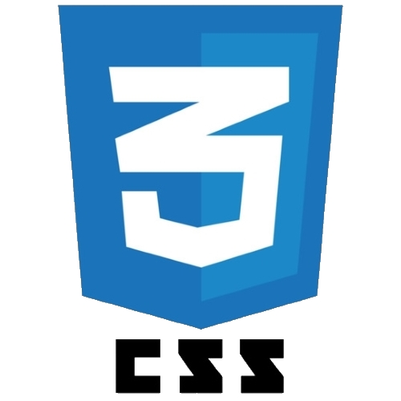

Full Stack Web Developer with an interest for creating apps with great user experience and efficiency. Experienced with JavaScript, React, Ruby, and Rails and a background in education.
I discovered web development through my lifelong passion for learning about new technology and the desire to challenge myself. I bring strong team-building and project management skills that bring about timely, high-quality results.
Outside of programming, I love trying new foods, playing tabletop games, learning about our evolving world of tech, being outside with nature, and bad puns.
Skills
- 

Recent Projects
Helping Hand
github |
live
Helping Hand is a full-stack web application for bringing volunteers and philanthropists together to support their communities with their resources. The app is built with Ruby on Rails with PostgreSQL database, React, Leaflet.js and Google Geolocation API.
Toque
github |
live
Toque aims to connect personal chefs with individuals who desire a “dine-out” experience in their own home. Built with a Ruby on Rails backend, a React.js frontend, and styled with Foundation.
LinkShells
github |
live
LinkShells is an app for bringing gamers together to organize and host LAN events. This app is built on a Ruby ERB frontend and Ruby on Rails backend. It utilizes the MVC pattern with RESTful routing.